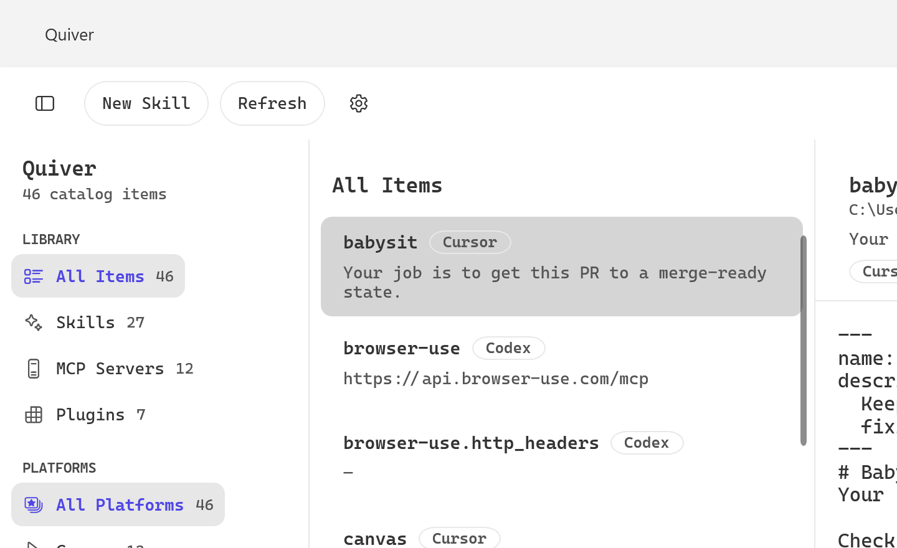

Your agent toolkit, in one quiver.
A native Windows app to browse, edit, and manage your local AI‑tool assets — skills, MCP servers, and plugins — across all your coding agents.

Your coding agents scatter skills, MCP configs, and plugins across hidden dotfolders. Quiver finds and centralizes them all.
Discovers skills, MCP servers, and plugins from Cursor, Claude Code, Codex, Hermes, Pi, and OpenCode — automatically.
A monospace SKILL.md editor with frontmatter, a multi‑file tree, and debounced autosave that writes straight back to disk.
New, rename, delete, and edit metadata — with validation and safe, atomic writes.
Watches your folders and refreshes on the fly. Search and filter by tool or section instantly.
Built with WPF on .NET 8 — a genuine Windows app with Fluent design and light/dark themes. No web view, no Electron.
MIT licensed and open source. Download the installer or run the single portable executable.
Reads the dotfolders these tools already use under your home directory.